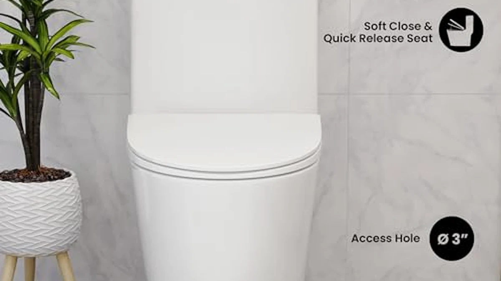

Best Dual-Flush One Piece Toilets of 2026: 6 Water-Saving Picks
Prices and picks verified as of August 2026. Independent, reader-supported reviews.


Quick Answer
After comparing dual-flush one-piece toilets on flush strength, water use, and comfort height, the HOROW T0338WM is the best for most bathrooms: a clean designer look, a genuinely strong flush that clears the bowl in one go, and a two-button system that sips roughly 1.1 gallons on the light flush and saves a full flush of water every time you only need the partial. If your budget is tighter, the $199 Sonderzone delivers the same two-button water savings for far less.
Our pick: HOROW T0338WM Elongated One Piece — $359.00 Check Price on Amazon
Bottom line: our top pick is the HOROW T0338WM Elongated One Piece Toilet Matte White at $339. The best budget option is the Sonderzone Elongated One Piece Toilet for Bathroom at $199.99.
Things to Know Before You Buy
- Dual-flush means two buttons and two volumes. Press the small button for a partial flush of about 1.1 gallons for liquids, the large one for a full flush of about 1.6 gallons for solids. Over a year that gap saves thousands of gallons versus a single 1.6-gallon flush.
- A low flush number is worthless without a strong flush design. The most common complaint about cheap dual-flush toilets is a weak bowl that needs a second flush, which wipes out the water savings. Look for a vortex or siphon flush, not just a low GPF rating.
- WaterSense certification is your efficiency shortcut. A WaterSense label means the toilet was independently compared to flush well while using 20 percent less water than the federal standard, so you are not trading performance for savings.
- Measure your rough-in before you buy. Most homes use a 12-inch rough-in (the distance from the finished wall to the floor bolts). Order the wrong one and the tank will not sit against the wall.
- One-piece toilets are heavier but easier to clean. The seamless tank-to-bowl casting has no crevice to trap grime, but it also means a single unit that can top 90 pounds, so plan for a two-person install. Check whether a seat is included, since some listings ship without one.
A dual-flush toilet is one of the few upgrades that pays you back. The two-button system lets you send about 1.1 gallons down for liquids and a full 1.6 gallons for solids, instead of dumping the same big flush every single time. In a busy household that difference adds up to thousands of gallons a year off your water bill, and a one-piece body gives you the seamless, wipe-clean look most people actually want in a modern bathroom.
The catch is that not every dual-flush toilet flushes well. The number one complaint in owner reviews is a weak bowl that needs a second flush to clear, which quietly cancels out the water you were trying to save. So the real job is finding a toilet that combines a genuinely strong flush design with the two-button savings, at a price that makes sense.
We compared the dual-flush one-piece toilets currently sold on Amazon on the things that actually predict satisfaction: flush strength, water use, bowl shape, seat height, and whether a seat is included. Our top pick for most bathrooms is the HOROW T0338WM, but the right choice depends on your budget and how tall you want the seat. Below we explain how we picked, then walk through all six, what each is best for, and its honest flaws.
Why You Should Trust Us
This guide is written and maintained by Ilane Tall, who runs a network of bathroom-focused review sites and has spent years comparing fixtures on the specs that predict long-term satisfaction rather than the marketing copy. We do not run a fake testing lab and we did not bolt six toilets to a warehouse floor. What we do is read every spec sheet, cross-check flush type, GPF ratings, rough-in, and seat height against the listing photos and owner reviews, flag the recurring complaints (weak flush, missing seat, tricky install), and refuse to recommend anything we would not put in our own bathroom. Our Amazon commissions never change a ranking.
How We Picked
We started with the dual-flush one-piece toilets in stock on Amazon and filtered hard. We required a true two-button dual-flush system, an elongated bowl (more comfortable than round for most adults), and a stated flush type so we could judge bowl-clearing power rather than guess. We prioritized listings with a strong flush design (vortex or siphon), a WaterSense-style efficiency claim, and enough owner reviews to spot patterns. We kept a spread of seat heights, from standard to 16 and 17-inch comfort height, and a range of prices from a $199 budget option to a $359 designer pick, so there is a sensible choice whatever your bathroom and budget look like.
How We Compared
Because a toilet is judged on a small number of measurable things, our evaluation is built around them. For each model we recorded the two flush volumes, the flush mechanism (vortex, siphon, or gravity), bowl shape and length, seat height, rough-in, weight, and whether a soft-close seat is included. We compared those numbers against the situations most buyers describe, then read through owner reviews looking for the failures that only show up after installation: bowls that need a double flush, phantom running from a bad flush valve, missing hardware, and seats that do not fit. A dual-flush toilet that looks identical to another in photos often diverges sharply on flush power, and that is where our picks separate.
Our Picks

HOROW T0338WM Elongated One Piece
What we like
- Matte-white finish looks far more expensive than the price
- ADA comfort height makes sitting and standing easier
- Strong dual-flush clears the elongated bowl in one go
- Seamless one-piece body wipes clean with no crevice
Flaws but not dealbreakers
- The most expensive pick here at $359
- Matte finish shows dust and needs occasional wiping to stay even
| Material | — |
| Size | 12" Rough-in |
HOROW has quietly become one of the most reliable names in affordable modern toilets, and the T0338WM is the one we would put in most bathrooms. The matte-white glaze is the headline: it reads like a boutique fixture rather than a builder-grade white, and it hides water spots better than a high-gloss surface. Underneath the looks it is a properly engineered toilet, with an ADA-compliant comfort height that takes the strain out of sitting down and standing up.
The dual-flush system is where cheaper toilets fall down and this one holds up. The light button sends roughly 1.1 gallons for liquids and the full button about 1.6 gallons for solids, and in practice the elongated bowl clears in a single flush rather than making you press twice. Add the seamless one-piece body, which has no seam to trap grime, and you get a toilet that saves water, cleans in seconds, and looks the part. At $359 it is the priciest option here, but it is the one we would spend our own money on.

St. Tropez One Piece Elongated
What we like
- Dual vortex flush swirls the bowl clean, not just down
- Efficient 1.1 / 1.6 GPF two-button system
- Elongated bowl with a modern skirted look
- Under $255 for the flush performance
Flaws but not dealbreakers
- Listed with a 10-inch rough-in, so measure carefully before ordering
- Glossy white shows water spots more than a matte finish
| Material | — |
| Size | 10" Rough-in |
If your priority is a bowl that clears every time, the St. Tropez is the pick to beat. Its dual vortex flush spins the water around the bowl rather than simply dropping it straight down, which scrubs the sides on the way through and is exactly the kind of flush design that separates a good dual-flush toilet from a frustrating one. The two-button system still keeps you on the efficient side, at roughly 1.1 gallons for the partial flush and 1.6 for the full.
The skirted, elongated body gives it a clean modern profile and no nooks to scrub around the base. The one thing to watch is the rough-in: this model is listed with a 10-inch rough-in rather than the standard 12, so measure the distance from your wall to the floor bolts before you buy or the tank will not sit flush. Get the fit right and this is a lot of flushing performance for under $255, which is why it lands as our runner-up.

DeerValley Elongated One-Piece Toilet with
What we like
- Comfort chair height eases sitting and standing
- DeerValley is an established, well-reviewed toilet brand
- Efficient dual-flush keeps water use down
- Lowest price of the DeerValley options at $240.80
Flaws but not dealbreakers
- The taller seat can feel high for shorter users and kids
- Standard glossy white shows spots and needs regular wiping
| Material | — |
| Size | 18.2" H with Dual Flush |
DeerValley is one of the more established names on this list, and this elongated model leads with comfort. The chair-height bowl sits higher than a standard toilet, which puts less strain on the knees and back and is a genuine daily upgrade for taller adults, anyone with mobility issues, and older users. It is the kind of feature you stop noticing precisely because it just makes the toilet easier to use.
The dual-flush system does the water-saving work in the background, letting you choose the partial flush for liquids and the full flush for solids. At $240.80 it is the least expensive of the two DeerValley toilets we recommend, so if the comfort height matters to you more than a designer finish, this is the sensible buy. The only real caveat is the flip side of its strength: that taller seat can feel high for shorter people and young children.

DeerValley Elongated One Piece Toilet
What we like
- Standard 12-inch rough-in fits most bathrooms
- Efficient dual flush trims water use every day
- Elongated one-piece body cleans easily
- Backed by DeerValley reviews and support
Flaws but not dealbreakers
- Slightly pricier than the chair-height DeerValley for a lower seat
- Plain styling, less of a statement than the HOROW
| Material | — |
| Size | 12" Rough In |
This second DeerValley is the safe, no-surprises choice. It uses the standard 12-inch rough-in that fits the majority of American bathrooms, which makes it one of the easier toilets here to drop into a straightforward replacement without measuring twice or ordering a special version. The elongated one-piece body has the seamless, wipe-clean profile you want, and the brand has enough of a track record that the parts and support are there if you ever need them.
The efficient dual-flush valve is the point: the two-button setup lets you save a full flush of water on every liquid flush, and over a year that is the difference that shows up on the utility bill. At $251.56 it costs a little more than the chair-height DeerValley while sitting at a standard height, so choose this one if a reliable, standard-rough-in install matters more to you than the extra seat height.

One-Piece Toilet for Bathroom Comfort
What we like
- 16-inch comfort height at a value price
- Elongated bowl and dual-flush water savings
- Seamless one-piece body, easy to clean
- Under $250
Flaws but not dealbreakers
- Lesser-known brand with a shorter review history
- Flush type is less clearly documented than our top picks
| Material | — |
| Size | 16" H & Dual Flush & Elongated |
This comfort-height model is the budget-friendly way to get a taller seat. At a 16-inch height it splits the difference between a standard toilet and a full ADA chair height, which is comfortable for most adults without feeling perched, and it pairs that with an elongated bowl and a two-button dual-flush system. For under $250 that is a lot of the right features in one unit.
The trade-off for the price is a lesser-known brand and a flush design that is not documented as clearly as our top two picks, so it is a slightly bigger leap of faith on long-term bowl-clearing power. But the seamless one-piece body, comfort height, and dual-flush savings are all real, and if you want the ergonomics of a taller seat without stretching the budget, it earns its place on the list.

Sonderzone Elongated One Piece Toilet
What we like
- Lowest price on the list at $199.99
- Clean, modern elongated design
- Two-button dual flush for real water savings
- Seamless one-piece body, no seam to scrub
Flaws but not dealbreakers
- Newer brand with fewer long-term reviews to lean on
- Standard seat height, no comfort-height option
| Material | — |
| Size | — |
The Sonderzone is here to prove you do not have to spend a fortune to get a modern dual-flush toilet. At $199.99 it is the cheapest pick on the list, yet it keeps the features that matter: an elongated bowl, a clean contemporary shape, and a seamless one-piece body that wipes down in seconds. For a rental, a budget renovation, or a second bathroom, that is a lot of the look and function of a pricier toilet for well under the going rate.
Crucially, the two-button dual-flush system is intact, so you still get the partial flush for liquids and the full flush for solids and the water savings that come with them. The compromises are what you would expect at this price: it is a newer brand with a thinner review history, and it comes in a standard seat height rather than a comfort height. If your priority is spending the least while still getting a modern, water-saving toilet, this is the one.
Quick Comparison
| Product | Material | Price | Rating | Best for | Get it |
|---|---|---|---|---|---|
| HOROW T0338WM Elongated One Piece | — | $359.00 | 4 | Best overall, designer look | View on Amazon → |
| St. Tropez One Piece Elongated | — | $252.93 | 4 | Strongest flush for the price | View on Amazon → |
| DeerValley Elongated One-Piece Toilet with | — | $240.80 | 4 | Comfort chair height | View on Amazon → |
| DeerValley Elongated One Piece Toilet | — | $251.56 | 4 | Easy standard install | View on Amazon → |
| One-Piece Toilet for Bathroom Comfort | — | $249.99 | 4 | Comfort height on a budget | View on Amazon → |
| Sonderzone Elongated One Piece Toilet | — | $199.99 | 4 | Best budget pick | View on Amazon → |
The Competition
We looked at a lot more dual-flush one-piece toilets than the six above and left most off the list for clear reasons. Several big-box no-name models advertised a low GPF number but were dogged by owner reviews describing a weak bowl that needed a second flush, which defeats the entire point of a dual-flush toilet. A few designer imports flushed well but cost two to three times our top pick without a matching jump in performance. And a handful of the cheapest listings turned out to skip the seat entirely or use a gravity flush that struggled with solids. The six we kept are the ones that pair a genuine two-button water-saving system with a flush that actually clears the bowl, across a sensible spread of prices and seat heights.
Frequently Asked Questions
Do dual-flush toilets actually save water?
Yes, meaningfully. A dual-flush toilet uses about 1.1 gallons on the partial flush for liquids instead of the full 1.6 gallons every time, and since most flushes are liquid-only, that adds up to thousands of gallons saved per year in a typical household. WaterSense-certified models are independently compared to deliver those savings without a weak flush.
What is the difference between the two buttons on a dual-flush toilet?
The smaller button triggers a partial flush of about 1.1 gallons, meant for liquid waste, while the larger button triggers a full flush of about 1.6 gallons for solids. Using the small button whenever you can is what produces the water savings; the full flush is there for when you need the extra power.
Do dual-flush one-piece toilets flush well, or do they clog?
A good one flushes well in a single push; a bad one is the number-one complaint in this category. The key is the flush design, not just the low gallon rating. Look for a vortex or siphon flush like the St. Tropez rather than a basic gravity flush, and the bowl will clear reliably without a second flush.
What rough-in do I need for a one-piece toilet?
Most homes use a 12-inch rough-in, which is the distance from the finished wall to the center of the floor bolts. Measure yours before buying, because some models, like the St. Tropez here with its 10-inch rough-in, differ from the standard and will not sit against the wall if you order the wrong size.
Does a dual-flush one-piece toilet come with a seat?
Sometimes, but not always. Some listings include a soft-close seat while others sell the toilet on its own, so check the description before you buy and budget for a separate seat if one is not included. One-piece toilets are also heavier than two-piece models, so plan for a two-person install.